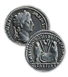

The Vindolanda Tablets

Candidus rubbed his eyes and once more began to read the detailed letter he had received from Octavius
He had clearly written it in a hurry as there were a number of misspellings and the handwriting was rather untidy. For this reason Candidus was struggling to make out the content of the letter
He knew that it was about Octavius' business arrangements with the Roman army, which he supplied with various goods.
Candidus scanned the first few lines and let out a quiet sigh. Octavius had requested money for a large amount of grain that he had paid a deposit for. He would lose the deposit if Candidus didn't send at least five hundred denarii.
Candidus read on a little further. Octavius also asked about the hides at Cataractonium which he was willing to collect; he had not collected them before now as the roads had been bad and he was worried about injuring the animals that would pull his cart.
Candidus decided he would write to Octavius straight away as there were a few matters that needed settling. As for the five hundred denarii, well, he would have to speak to the centurion about that!